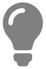
Для удобства рекомендуем играть в горизонтальной ориентации экрана (landscape orientation).
• Пасьянс "Подвал" •
Об игре
Сложный карточный пазл, где придётся изрядно поломать голову. С самого начала все карты открыты и лежат «ковром». Главная фишка не в том, чтобы просто раскладывать, а в стратегическом выборе: пытаться довести расклад до конца или вовремя признать, что он нераскладываемый, и пересдать, чтобы не потерять очки. Решение «сдаться» сразу — это не проигрыш, а допустимая тактика: ты осознанно теряешь меньше, чем мог бы, и получаешь новый «ковёр». Перед решением начать игру требуется в уме произвести расчёт. Каждый расклад имеет в начале много ложных ходов. Легко сделать пару красивых перемещений и загнать себя в тупик.
Правила
♦ 52 карты раскладываются как на рисунке ниже. Четыре туза кладутся в центр. Под тузами находится пустое место, которое называется "подвал".
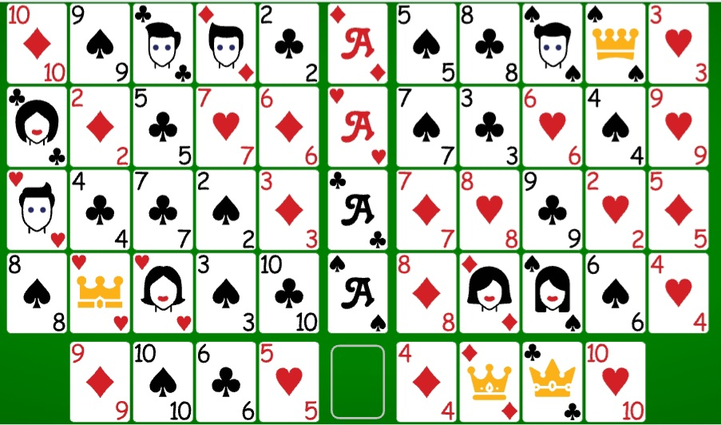
♦ Цель игры: на четырёх тузов в центральном вертикальном ряду необходимо собрать все карты по масти последовательно либо в возрастающем (с двойки до короля), либо в убывающем (с короля до двойки) порядке.
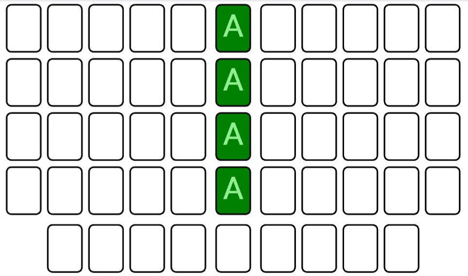
♦ Начав собирать карты на одного туза, положив на него двойку или короля, далее следует придерживаться выбранного порядка для всех остальных тузов.
♦ Разрешено пользоваться только свободными, крайними боковыми картами. Остальные внутренние карты остаются заблокированными, пока сами в свою очередь не станут крайними свободными картами по мере того, как ряд будет разбираться.
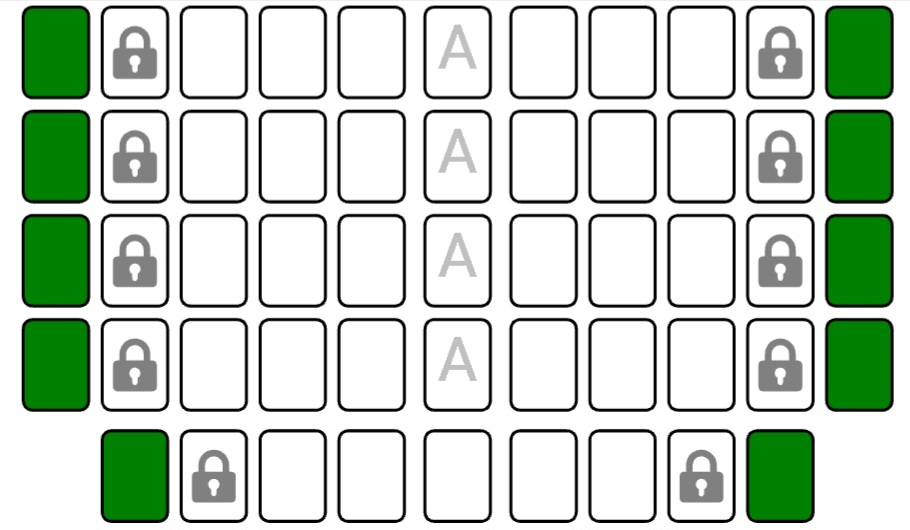
♦ Свободные карты одной масти можно перекладывать друг на друга в любом убывающем или возрастающем порядке. Одиночные карты, таким образом положенные друг на друга, образуют пачки. Пачки карт также можно перекладывать друг на друга, равно как и одиночные свободные карты можно добавлять к пачкам, либо пачки перекладывать на одиночные свободные карты, соблюдая масть и порядок.
♦ Если боковой ряд с любой из сторон какого-либо туза разобран (пять карт в ряду), то на это пустое место можно переложить любую свободную карту (как одиночную, так и пачку).
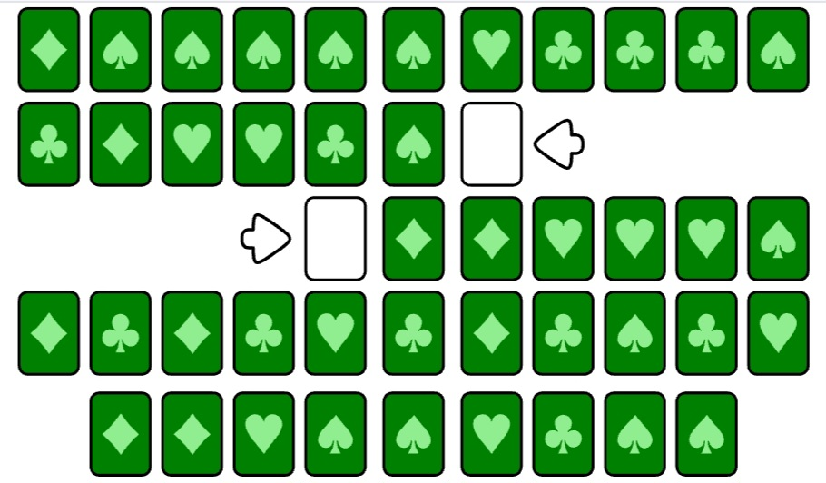
♦ Пустое место в нижнем горизонтальном ряду посередине называется "подвалом", куда можно отправить любую свободную карту, но только одиночную. Всю пачку карт в подвал убрать нельзя.
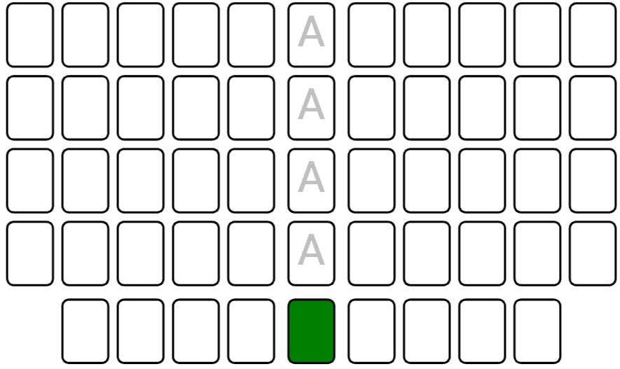
♦ Карта в подвале остаётся запертой. Освободить и убрать карту из подвала можно, если разобрать ряд из четырёх карт с любой стороны "подвала". Эти нижние ряды из четырёх карт называются "стенами подвала" (на схеме красным). Таким образом, "стены" блокируют карту в "подвале", пока одна из этих "стен" не убрана.
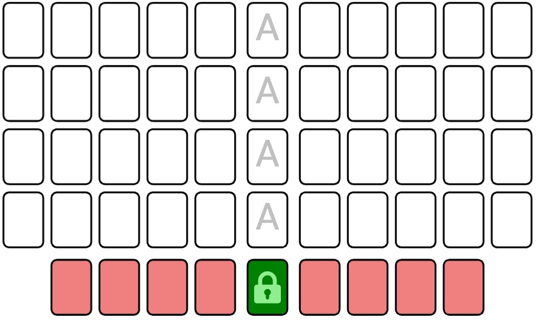
Очки
♦ За все разложенные карты, если на всех четырёх тузах одинаково соблюдён убывающий или возрастающий порядок, добавляется пять очков (+5). Это победа.
♦ Если же карты все разложены, НО одинаковый порядок (убывающий или возрастающий) на всех четырёх тузах НЕ соблюдён, очки не присуждаются (ноль очков). Это ничья.
♦ Если игрок, сделав ходы (хотя бы один ход), не смог до конца решить расклад и сдался, то снимается три очка (-3). Это проигрыш.
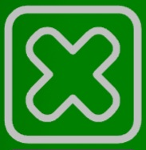
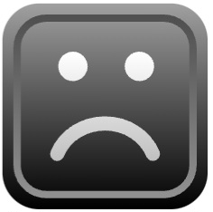
♦ Если игрок, оценив новый расклад, сразу в самом начале заключил, что расклад не имеет решения, и сдался, НЕ сделав ни одного хода, тогда снимается только одно очко (-1).
♦ За отмену хода снимается одно очко, но только один раз за игру. Таким образом, отмену хода можно делать любое количество раз, но за это сгорит всего лишь одно очко (-1).
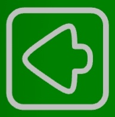
♦ Полная победа присуждается, если игрок наберёт максимально 999 очков.
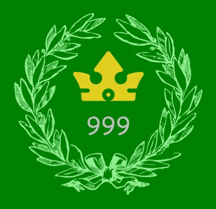
♦ Все накопленные очки исчезнут, если очистить историю браузера (cookies-файлы). Счёт начнётся заново с нуля.